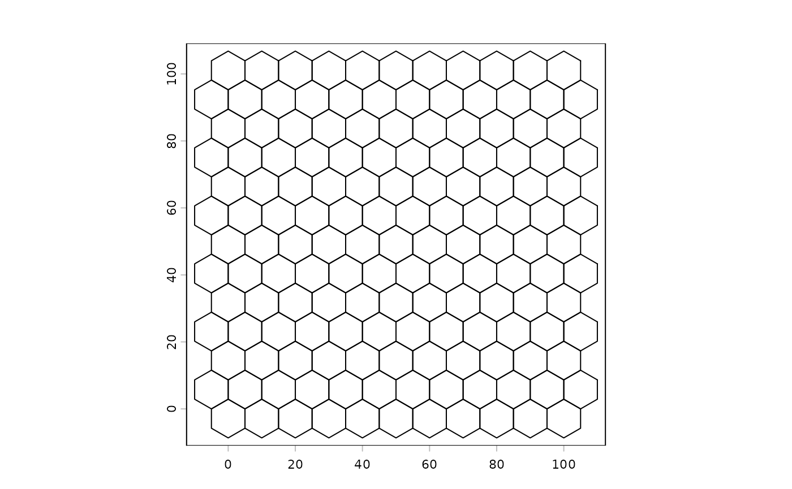
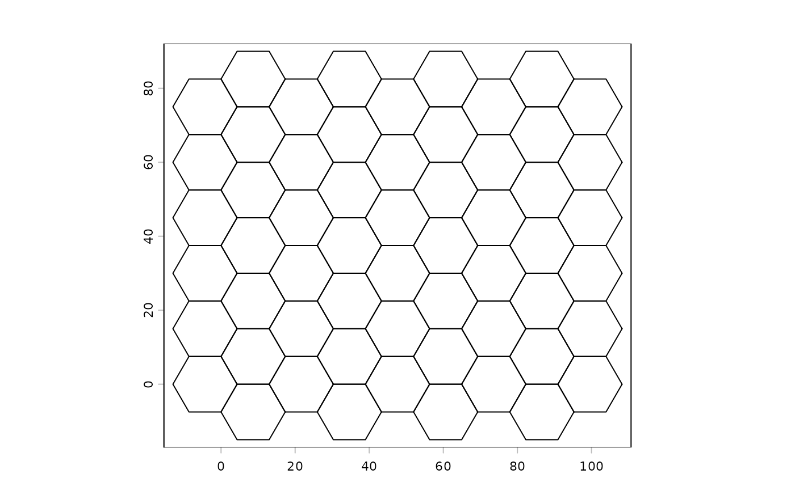
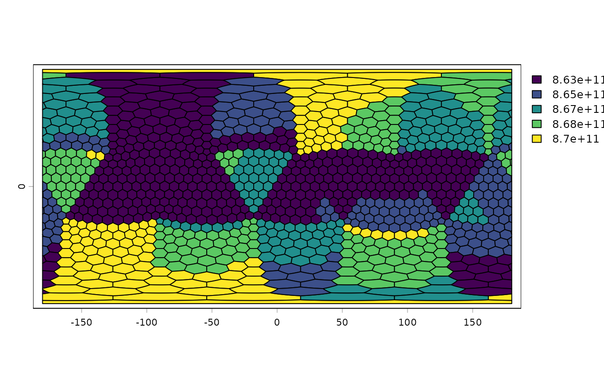
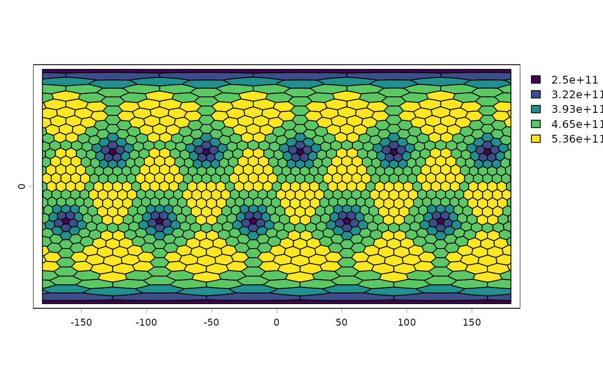

Create a tesselation
tessellate.RdCreate a tessellation of polygons with no gaps or overlaps that cover constant area. The polygons can be hexagons or rectangles. For lon/lat coordinates it is also possible to use (Goldberg) polyhedrons with 12 pentagonal cells and 10*(n^2-1) hexagonal cells, of approximately equal size. Hexagons have constant area, but varying shape with lon/lat coordinates.
Usage
# S4 method for class 'ANY'
tessellate(x, size, n, type="hexagon", flat_top=FALSE, align="fit", geo=NULL)Arguments
- x
SpatRaster, SpatVector or other object from which a SpatExtent can be extracted. If missing, a global lon/lat extent is used
- size
positive number. The "across-flats" distance of a hexagon, or the center-to-center distance to the nearest neighbour in the dominant direction. The unit is the unit of the input crs, or meters for longitude/latitude data. Size is approximate for polyhedrons
- n
positive integer. Polyhedron subdivision frequency. The output has 10*n^2 + 2 cells in total (12 pentagons + 10*(n^2 - 1) hexagons). If this is supplied, argument
sizeis ignored- type
character. One of "hexagons", "rectangles", or "polyhedron"
- flat_top
logical. If
TRUE, hexagons have two horizontal (flat) edges; ifFALSE(the default) they have two vertical edges and a vertex pointing up and down (pointy-top)- align
character. rectangle alignment, one of "fit" (all retangles fit within the extent, creating variability in size), "align" all rectangles (except perhaps the polar rectangles) have equal-area, but may stick out of the extent), or "cube" (rectangles are "cubes" in terms of naive longitude/latitude math, and may stick out of the extent)
- geo
logical. If
TRUE, andxis a SpatExtent, the coordinates ofxare interpreted longitude/latitude. If it isNULLthe coordinates are used to guess the CRS from the coordinates. IfFALSEthe CRS is set to "local" ifxdoes not have a CRS
Examples
# planar hexagons (exact tiling, equal Cartesian area)
e <- ext(0, 100, 0, 100)
h <- tessellate(e, size=10)
plot(h)

# flat-top hexagons over a raster's extent
r <- rast(nrows=10, ncols=10, xmin=0, xmax=100, ymin=0, ymax=80, crs="local")
h2 <- tessellate(r, size=15, flat_top=TRUE)
plot(h2)

# rectangles
r1 <- tessellate(r, size=15, type="rect", geo=FALSE)
r2 <- tessellate(ext(r), size=1000000, type="rect", geo=TRUE)
r3 <- tessellate(ext(r), size=1000000, type="rect", align="equal", geo=TRUE)
r4 <- tessellate(ext(r), size=1000000, type="rect", align="cube", geo=TRUE)
# global lon/lat equal-area hexagon tessellation
g <- tessellate(size=1000000, geo=TRUE)
g
#> class : SpatVector
#> geometry : polygons
#> dimensions : 520, 0 (geometries, attributes)
#> extent : -180, 180, -65.08037, 65.08037 (xmin, xmax, ymin, ymax)
#> coord. ref. : +proj=longlat +R=6378137 +no_defs
# global polyhedron, frequency 10 -> 12 pentagons + 990 hexagons
g1 <- tessellate(n=10, type="polyhedron")
g1$size <- expanse(g1)
plot(g1, "type", col=c("tomato", "skyblue"))

plot(g1, "size")

# the truncated icosahedron ("football"): n=1, 12 pentagons + 0 hexagons
g2 <- tessellate(n=1, type="polyhedron")
# specify cell size in meters instead of frequency
g3 <- tessellate(size=1000000, type="polyhedron")